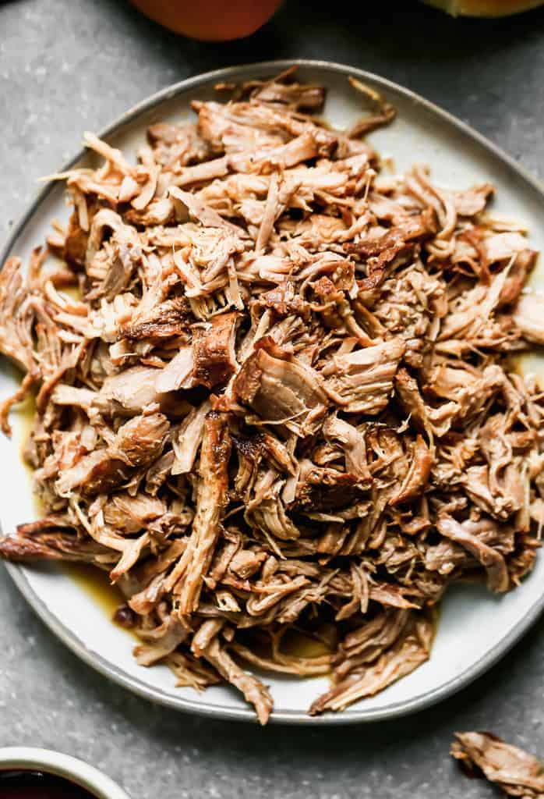

Pulled Pork

Description
Whether you're planning food for a party, BBQ, or a simple weeknight dinner, this pulled pork recipe is a guaranteed crowd pleaser.
Serve it with BBQ sauce and your favorites side dishes, or serve it in sandwiches, tacos, nachos and more.
Ingredients
- Pork
- Onion
- Your favorite BBQ sauce
Steps
- Dice the onion.
- Place the pork, diced onion and barbecue sauce in a slow cooker let it cook on low for 8-12 hours.
- When the pork is fully cooked and tender, use two forks to pull the pork apart and mix it around in the sauce
- Serve directly from the slow cooker! Enjoy!